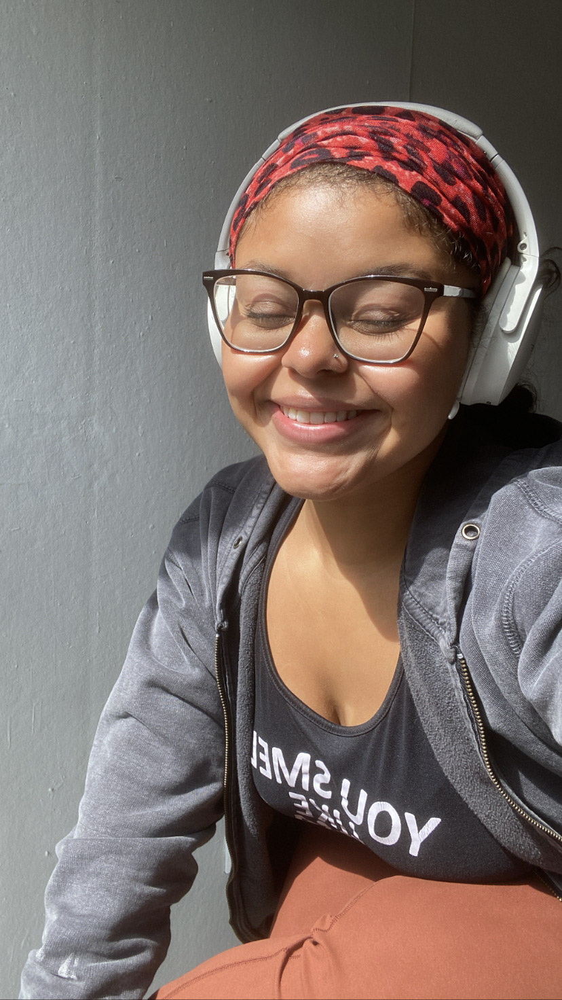

About Janira
Janira is a 21-year-old fine artist and software developer from New York City.
She is currently studying Computer Science and Visual Arts at Columbia University, where she merges her technical expertise with her creative practice.
Her passion for art is deeply rooted in exploring culture and heritage. Through oil painting on unconventional surfaces like yarn and canvas, she creates deeply personal works that allow her to heal, process, and confront generational curses and blessings. By reflecting on identity and history through her art, she transforms personal storytelling into a powerful medium for connection and self-discovery.
Janira’s journey into coding began with a simple desire—to build fun and creative websites. Over time, this curiosity evolved into an insatiable need to problem-solve, pushing her to explore the intersection of logic and creativity in software development. Whether she’s debugging code or experimenting with new artistic techniques, she thrives on finding innovative solutions and pushing boundaries in both disciplines.